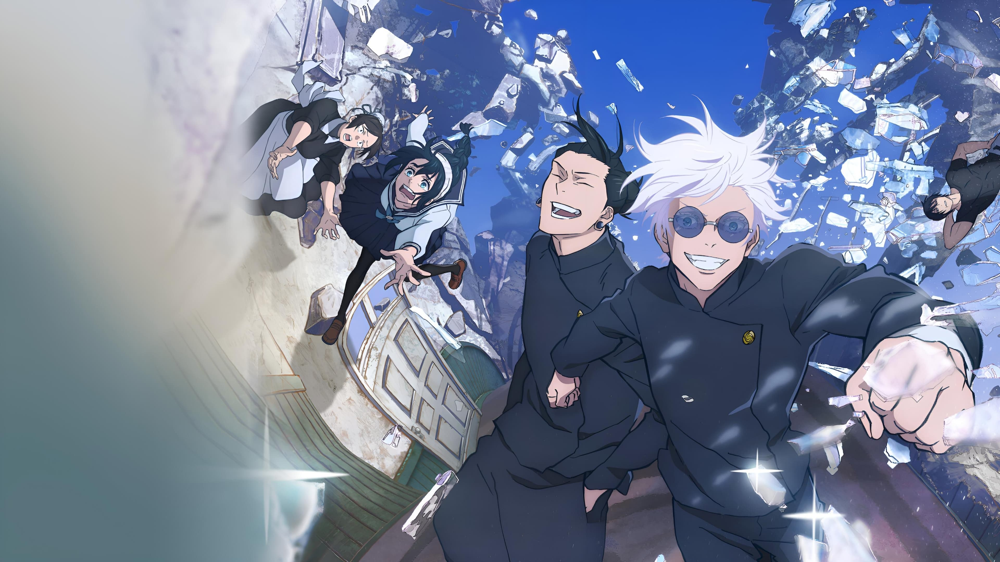

Sub|Dob
Dificultades, arrepentimiento, vergüenza… Los sentimientos negativos de los humanos se convierten en Maldiciones que nos acechan en nuestra vida diaria. Las Maldiciones campan a sus anchas por todo el mundo, y pueden llevar a las personas a sufrir terribles desgracias e incluso dirigirlas a su muerte. Y lo que es peor: solo una Maldición puede exorcizar otra Maldición.